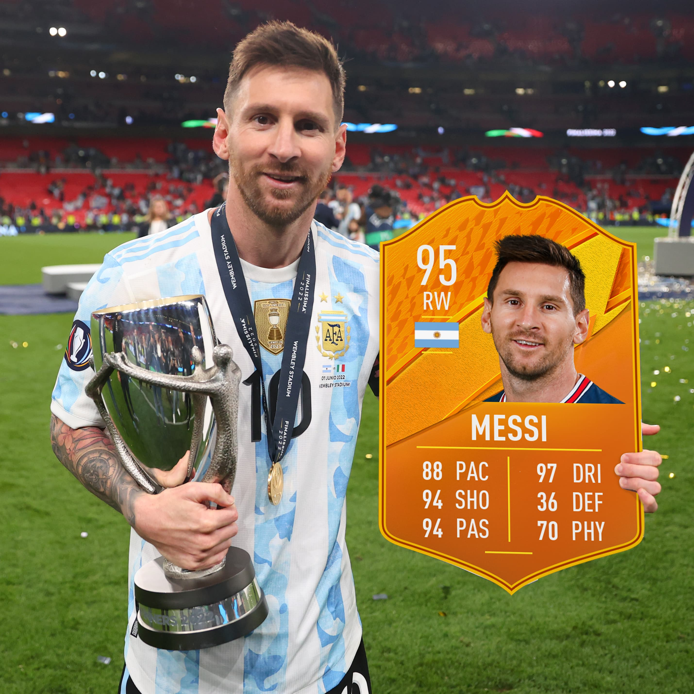

Lionel Messi
Argentine-born football player

The clubs that Messi played for
- Barcelona
- PSG
Lionel Messi, in full Lionel Andrés Messi, also called Leo Messi, (born June 24, 1987, Rosario, Argentina), Argentine-born football (soccer) player who was named Fédération Internationale de Football Association (FIFA) world player of the year six times (2009–12, 2015, and 2019).
Messi started playing football as a boy and in 1995 joined the youth team of Newell’s Old Boys (a Rosario-based top-division football club). Messi’s phenomenal skills garnered the attention of prestigious clubs on both sides of the Atlantic.
At age 13 Messi and his family relocated to Barcelona,
and he began playing for FC Barcelona’s under-14 team.
He scored 21 goals in 14 games for the junior team, and he quickly graduated through the higher-level teams until at age 16 he was given his informal debut with FC Barcelona in a friendly match
The honour of holding the Olympic Games is entrusted to a city, not to a country.
The choice of the city lies solely with the IOC. Application to hold the Games is made by the chief authority of the city,
with the support of the national government.
Applications must state that no political meetings or demonstrations will be held in the stadium or other sports grounds or in the Olympic Village.
Applicants also promise that every competitor shall be given free entry without any discrimination on grounds of religion, colour, or political affiliation.
This involves the assurance that the national government will not refuse visas to any of the competitors. At the Montreal Olympics in 1976, however, the Canadian government refused visas to the representatives of Taiwan because they were unwilling to forgo the title of the Republic of China, under which their national Olympic committee had been admitted to the IOC. This Canadian decision, in the opinion of the IOC, did great damage to the Olympic Games, and it was later resolved that any country in which the Games are organized must undertake to strictly observe the rules. It was acknowledged that enforcement would be difficult, and even the use of severe penalties by the IOC might not guarantee elimination of infractions..